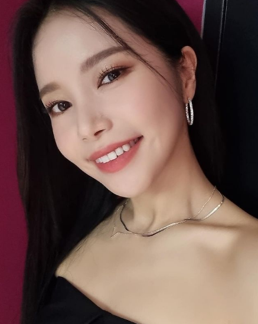

SOLAR - 솔라
Solar es el nombre artístico de Kim Yong Sun, una cantante y actriz surcoreana mejor conocida por ser la líder y vocalista principal del grupo femenino de K-pop MAMAMOO. Nacida el 21 de febrero de 1991, debutó con MAMAMOO en 2014 y el grupo de chicas fue considerado uno de los mejores debuts del año. Desde entonces, el grupo ha lanzado varias bandas sonoras de populares dramas televisivos, incluidos "Marriage, Not Dating" (2014), "Spy" (2015) y "Twenty Again" (2015). Solar hizo su debut actoral en el drama televisivo de 2015 "Imaginary Cat" y también se unió al elenco de "We Got Married" en 2016 con el cantante Eric Nam.
| Pocisión | Líder, Vocalista y Bailarina |
| Cumpleaños | Feb 21, 1991 (edad 31) |
| Signo Zodiacal | Acuario |
| Estatura | 1.63 cm |
| Agencia | Rainbow Bridge World Entertainment (RBW) |